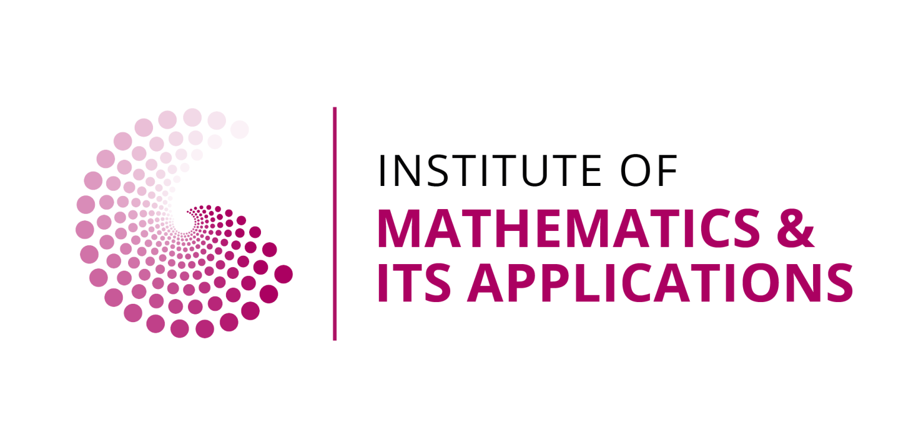

Higher Education Teaching and Learning Series 24/25
IMS, RSS & LMS Higher Education Teaching and Learning Workshop Series 2025
Rethinking Teaching and Learning in The Mathematical Sciences in Times of Generative AI
We are waiting for you to join us this summer in Edinburgh!
Overview
After having the storm of Generative AI (Gen-AI), like ChatGPT, higher education (HE) system started to discuss possibilities and challenges since 2023. Whilst these tools provide transformative results, we must ensure that students are using them critically for their teaching and learning process. As mentioned in various reports and projections, as higher education institutions, we should help them to be prepared for work life after their study, but it is vital that those tools are used as help rather than bypassing the learning process. There is an ongoing debate on using such tools for teaching or not, with various strategies or plans applied so far. The course level/content sensitivity is varying with such tools, ie., proof-based mathematics vs. programming modules. Mainly, it is urgent to reconsider the teaching and learning under the huge pressure of Gen-AI-based tools and their high-speed development.
As Gen-AI becomes widespread, it is crucial to provide an enriched platform to share best practices and thought-provoking panel discussions among the HE institutions. The proposed workshop aims to address this critical challenge by bringing together a collection of educators and teaching practitioners from related fields of study, especially Mathematical Sciences / STEM.
We aim to stimulate discussions among teaching practitioners relying on their experiences. The University of Edinburgh, in collaboration with The University of Glasgow, will host this follow-up workshop to last year’s Glasgow event on rethinking assessment in times of Gen-AI, keeping momentum going on interesting discussions.
We want…
… to foster the discussion alongside the recent Gen-AI related improvements for the teaching and learning on mathematics education. Possible themes are below but not limited to
- Integrating AI Tools in Mathematical Education
- Ethical Considerations in AI-Driven Learning
- Personalized Learning Pathways with AI
- AI and the Evolution of Mathematical Problem Solving
- Instructor Roles in an AI-Augmented Classroom
- Assessing the Learning Outcomes in the Age of Gen-AI
- How to develop Critical Thinking and AI Literacy
Workshop Details
Organisers
This event organized by,
- Ozan Evkaya (University of Edinburgh)
- Jennifer Gaskel (University of Glasgow)
- Skarleth Carrales Escobedo (University of Edinburgh)
- Steven O’Hagan (University of Edinburgh)
For more details about this workshop, including registering your interest, please contact: Ozan.Evkaya@ed.ac.uk.
Where and When?
This workshop will be hosted by the University of Edinburgh, School of Mathematics.
Event Venue Elm Lecture Theatre, Nucleus Building, The King’s Buildings campus, The University of Edinburgh, EH9 3FG. The Nucleus Building is a new shared learning, teaching and social hub at the heart of The King’s Buildings campus. See the location from the Google map
The event takes place on-site on July 18, Friday, between 10.00-16.00
How to participate?
Please reserve your seat until, 30th June 2025 Monday. Please note that capacity is limited, so registration may stop before the deadline when all seats are taken!
See the registration form at your earliest convenience or use the QR code given below
Tentative Schedule
| Time | Session Details |
|---|---|
| 10:00 - 10:15 | Welcome and Introduction |
| 10:15 - 11:00 | Main Speaker 1: Michael Groove – TBA |
| 11:00 - 11:30 | Lightning Talks Session 1 |
| 11:30 - 12:00 | Tea/Coffee Break |
| 12:00 - 12:45 | Main Speaker 2: Stuart King – TBA |
| 12:45 - 13:30 | Lunch Break (Will be served?) |
| 13:45 - 14:00 | Discussion Topic 1 |
| 14:00 - 14:30 | Lightning Talks Session 2 |
| 14:30 - 14:45 | Tea/Coffee Break |
| 14:45 - 15:00 | Discussion Topic 2 |
| 15:00 - 15:45 | Main Speaker 3: TBA |
| 15:45 - 16:00 | Closing Remarks |
KeyNote Speakers
Michael Groove
is Deputy Pro-Vice-Chancellor for Education Policy and Academic Standards at the University of Birmingham, Professor of Mathematics and Mathematics Education, and a National Teaching Fellow.
Talk Title and Abstract: TBA
Stuart King
is working at the School of Mathematics at the University of Edinburgh as a lecturer in Mathematics in 2015, as a member of the Applied and Computational Mathematics research group.
Talk Title and Abstract: TBA
Speaker 3
Talk Title and Abstract: TBA
Higher Education Teaching and Learning Series 2025
Other events?
Please see the other events happening this year below;
| Date | Event Title | Institution |
|---|---|---|
| 12 JUNE | Fostering Engagement and Learning in Mathematics in the Digital Age | University of Central Lancashire |
| 4 JULY | Rethinking feedback and assessment: what does this mean in traditionally exam-based mathematics? | Imperial College London |
| 10 JULY | Enhancing Student Community and Learning: Adapting Strategies for Changing Patterns of Student Engagement | The Open University |
| ?? JULY (TBA) | Automatic grading in mathematics and statistics: beyond the basics | University of Liverpool |
Speaker Slides
Please see the keynote speaker slides and participant contributions from that list (will be udpated later)
KeyNote
Lightning Talks 1
Lightning Talks 2
This workshop event is mainly funded by;
